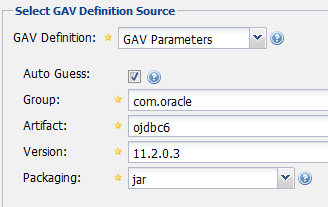
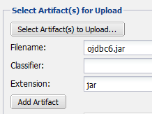

12.1. NEXUSによるMavenリポジトリの管理¶
Sonatype NEXUSはパッケージリポジトリマネージャソフトウェアである。 OSS版 と 商用版 があるが、OSS版でも十分な機能がある。
本章ではOSS版のNEXUSの役割と設定方法などについて解決する。
12.1.1. Why NEXUS ?¶
開発者が一人しかいない場合には、インターネット上のセントラルリポジトリと、 その開発者のPC内のローカルリポジトリだけでも、mavenやant+ivyを使って開発することは可能である。
しかし、Javaアプリケーションを複数のサブプロジェクトに分けてチームで開発する場合には ライブラリの依存性解決が複雑になるため、ライブラリの依存性解決の自動化が必要となる。 そのためにはパッケージリポジトリサーバの存在が不可欠である。
Javaアプリケーション開発プロジェクトにおいて必要となるパッケージリポジトリは次のようなものがある。
セントラルリポジトリをはじめとする外部のリポジトリサーバへのアクセスをプロキシする プロキシリポジトリ
インターネット上のリポジトリでは公開されていない、他者から提供されたartifactを組織内部で配布するための サードパーティリポジトリ
そのプロジェクト自体で開発されたartifactを格納するための プライベートリポジトリ
複数の異なるリポジトリのartifactへのアクセスを一つのリポジトリURLに集約するための グループリポジトリ
NEXUSならこうした複数のリポジトリを楽に運用管理できる。
12.1.2. Install and Start up¶
NEXUSをインストールするマシンは次の条件を満たしている必要がある。
JRE6以上がインストール済みであること
インターネット上のセントラルリポジトリ（先頭がhttps://repo1.maven.org/ で始まるURL）にhttpsアクセス可能であること
インストール手順は次の通り。
NEXUS OSS をダウンロードし、アーカイブを展開する。
bin/nexus または bin/nexus.bat を実行するとNEXUSが起動する。
http://[IP or FQDN]:8081/nexus/ へアクセスし、NEXUSの初期画面が見えることを確認する。
いくつかのリポジトリがデフォルトで用意されている。特別な場合を除いて、デフォルトのままでも十分に開発に使える。 画面左のメニュー部のRepositoriesをクリックするとリポジトリ一覧が表示される。
Central = インターネット上のセントラルリポジトリ(https://repo1.maven.org/maven2/)へのproxyの役割を果たすリポジトリ。
3rd party = インターネット上で公開されているリポジトリにはないが、開発で必要となるサードパーティ製ライブラリを保管するリポジトリ。
Releases = 自分たちで開発したアプリケーションのリリースバージョンの成果物を格納するリポジトリ。
Snapshots = 自分たちで開発したアプリケーションのSNAPSHOTバージョンの成果物を格納するリポジトリ。
Public Repositories = 上記4つのリポジトリへ、一つのURLでアクセスできるようにするためのグループリポジトリ。
12.1.3. settings.xml¶
構築したNEXUSをmavenコマンドから使用するには、 ローカル開発環境のユーザーホームディレクトリにsettings.xmlファイルを作成しておく必要がある。
Windows: C:/Users/[OSaccount]/.m2/settings.xml
Unix: $HOME/.m2/settings.xml
<?xml version="1.0" encoding="UTF-8"?>
<settings>
<mirrors>
<mirror>
<id>myteam-nexus</id>
<mirrorOf>*</mirrorOf>
<!-- CHANGE HERE by your team own nexus server -->
<url>http:// IP or FQDN /nexus/content/groups/public </url>
</mirror>
</mirrors>
<activeProfiles>
<activeProfile>myteam-nexus</activeProfile>
</activeProfiles>
<profiles>
<profile>
<id>myteam-nexus</id>
<repositories>
<repository>
<id>central</id>
<url>http://central</url>
<releases><enabled>true</enabled></releases>
<snapshots><enabled>true</enabled></snapshots>
</repository>
</repositories>
<pluginRepositories>
<pluginRepository>
<id>central</id>
<url>http://central</url>
<releases><enabled>true</enabled></releases>
<snapshots><enabled>true</enabled></snapshots>
</pluginRepository>
</pluginRepositories>
</profile>
</profiles>
</settings>
Note
12.1.4. mvn deploy how to¶
jar/warファイルをartifactとしてパッケージリポジトリ（NEXUS）にアップロードするには、mvn deployコマンドを使用する。
パッケージリポジトリに誰でもデプロイ可能な状態は混乱を招くので避けるべきである。 そこで、Jenkinsだけがパッケージリポジトリに対してmvn deploy可能とする運用を推奨する。
Jenkinsサーバ内のJenkinsの実行ユーザーのホームディレクトリ配下の.m2/settings.xmlに、 前述と同じ内容に加えて、さらに下記を追加しておく。
<servers>
<server>
<id>releases</id>
<username>deployment</username>
<password>deployment123</password>
</server>
<server>
<id>snapshots</id>
<username>deployment</username>
<password>deployment123</password>
</server>
</servers>
deploymentはデプロイ権限を持つアカウント（NEXUSにデフォルトで設定済みの）であり、 deployment123はそのパスワードである。 もちろん、NEXUSのGUI画面上であらかじめパスワードを変更しておくことを推奨する。
Note
settings.xml上にplain textでパスワードを保存することを避けたい場合には、 mavenのパスワード暗号化機能を利用するとよい。詳しくは Maven - Password Encryption を参照のこと。
Jenkinsのビルドジョブでは次のようにしてmvn deploy手順を設定する。
12.1.5. pom.xml¶
mavenで管理されたプロジェクトでは、artifactとなった自分自身をどのパッケージリポジトリに格納されるべきかを pom.xml上の<distributionManagement>タグで表明する必要がある。
<distributionManagement>
<repository>
<id>releases</id>
<!-- CHANGE HERE by your team nexus server -->
<url>http://192.168.0.1:8081/nexus/content/repositories/releases/</url>
</repository>
<snapshotRepository>
<id>snapshots</id>
<!-- CHANGE HERE by your team nexus server -->
<url>http://192.168.0.1:8081/nexus/content/repositories/snapshots/</url>
</snapshotRepository>
</distributionManagement>
前述のmvn deployコマンドは、<distributionManagement>タグで指定されたURLに対してHTTP PUTでartifactをアップロードする。
12.1.6. Upload 3rd party artifact (ex. ojdbc6.jar)¶
サードパーティ用リポジトリには、外部のリモートリポジトリでは公開されていないartifactを格納する。
典型的な例が、oracleのJDBCドライバ(ojdbc*.jar)である。 RDBMSとしてoracleを使用する場合に必須だが、 セントラルリポジトリはもちろん、インターネット上の公開リポジトリに格納されていることはほとんどない。 そのため、組織内のパッケージリポジトリに格納しておく必要がある。
adminユーザーでログインする。（デフォルトのパスワードはadmin123）

3rdPartyリポジトリを選択し、 Artifact Upload タブを選択する。

GAV情報を入力する。(GAV = groupId, artifactId, version)

ローカルPC上のojdbc6.jarファイルを選択し、 Add Artifact ボタンを押す。

最後に Upload Artifact(s) ボタンを押すと、リポジトリにjarファイルが格納される。

以上でアップロード作業は完了。
Note
NEXUSのGUI画面を使ってartifactをアップロードする作業は完全に手作業であり オペレーションミスを誘発しやすいため、推奨しない。 odjbc6.jarのような、サードパーティ製で、しかも1個または数個程度のファイルで 構成可能な単純なライブラリに対してのみ、ここで説明している方法を用いるべきである。 それ以外のケースでは mvn deploy コマンドを使うべきである。
12.1.6.1. use artifact¶
3rd partyリポジトリ上のojdbc6をプロジェクトの依存性管理に追加するには、 そのプロジェクトのpom.xmlにdependencyタグを追加するだけである。
Browse Storage タブから目的のartifactを選択すると、画面右側にdependencyタグのサンプルが表示される。 それをpom.xmlにコピー＆ペーストすればよい。